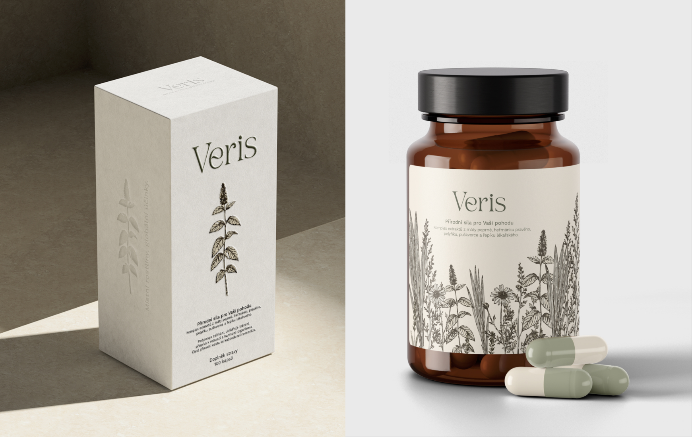

V týmu jsme navrhli kompletní vizuální identitu značky Veris založenou na jemné typografii, tlumené barevnosti a ilustracích lokálních rostlin. Já jsem se podílela zejména na vizuálním zpracování, výběru barev a typografického systému. Pracovala jsem s kombinací přírodních tónů, které odkazují na sušené byliny, lesní prostředí a papírové herbáře. Typografie měla působit elegantně a klidně, podobně jako staré botanické atlasy. Součástí návrhu byly také aplikace identity na obaly, etikety a drobné tiskoviny.
Vizuální identita pro bylinné doplňky
Role
Brand Designer
Předmět
Řízení multimediálních projektů
Semestr a ročník
LS 2024/2025, 2. ročník Bc.
Typ
Skupinový projekt
Oblast
branding, vizuální identita

Výzva
Cílem projektu bylo vytvořit vizuální identitu pro značku přírodních doplňků stravy postavenou na českých bylinách a lokálních surovinách. Zadání pracovalo s tématem návratu k přírodě, tradici a důvěře, ale bylo důležité vyhnout se vizuálním klišé spojeným s folklorem nebo bio estetikou. Značka měla působit současně, elegantně a důvěryhodně, zároveň ale zachovat vztah k české krajině a léčivým rostlinám.
Řešení
Výsledek
Vznikla ucelená brand identita propojující botanické ilustrace, minimalistickou sazbu a jemnou barevnost do jednoho konzistentního systému. Výsledný branding pracuje s přírodní estetikou civilně a současně, bez přehnané dekorativnosti.